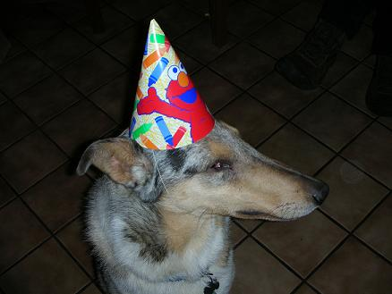
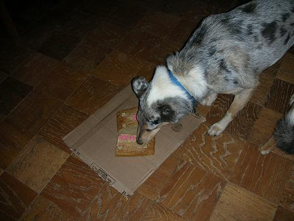
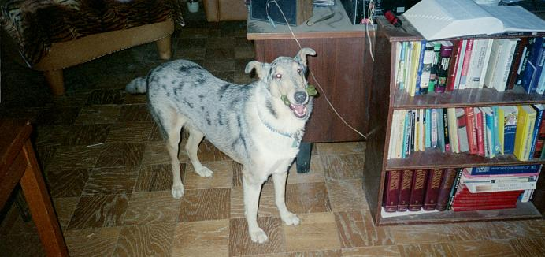
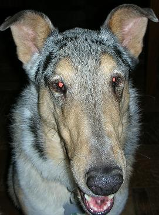
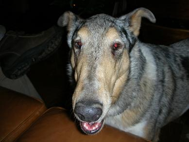
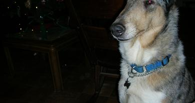

| Its
the new handy dandy thingy! It is designed to make it easier to go from page to page. You no longer have to return to my main page every time you wish to see a new page. Simply click on the face of whose page you want to see and you will magically be sent there.         |
Lincoln
The Cake
This is the cake
that I
baked for Birde and Lincoln on their
fourth birthday. It basically consists of canned dog food flour
and sugar. I had some trouble with the frosting because I
was running out of peanut butter and I could barely make
frosting to cover the top of the cake and I had none left for
the writing. I responded to this problem by adding red food
coloring to yogurt and thus the frosting shortage was no more.
If you need a recipe for a doggie cake(most people don't) you
can click on the picture below.
fourth birthday. It basically consists of canned dog food flour
and sugar. I had some trouble with the frosting because I
was running out of peanut butter and I could barely make
frosting to cover the top of the cake and I had none left for
the writing. I responded to this problem by adding red food
coloring to yogurt and thus the frosting shortage was no more.
If you need a recipe for a doggie cake(most people don't) you
can click on the picture below.
Elmo Hat!
These are just some paper hats we bought at the store.
Linkie was very good about wearing his hat and posing for
the pictures and I got several good shots of him in his elmo hat.

The Eating of the Cake

Greenie Eating
In case you didn't know greenies are edible dog bones that clean dogs teeth while they chew them.

More Pictures
 
